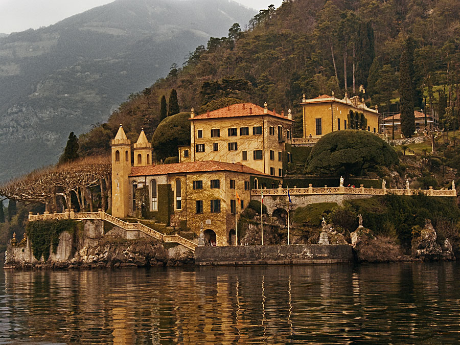
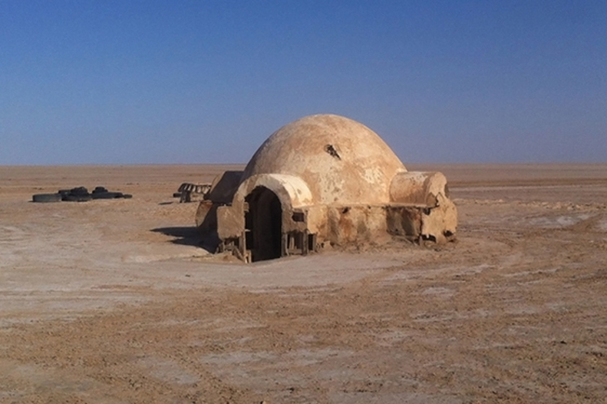
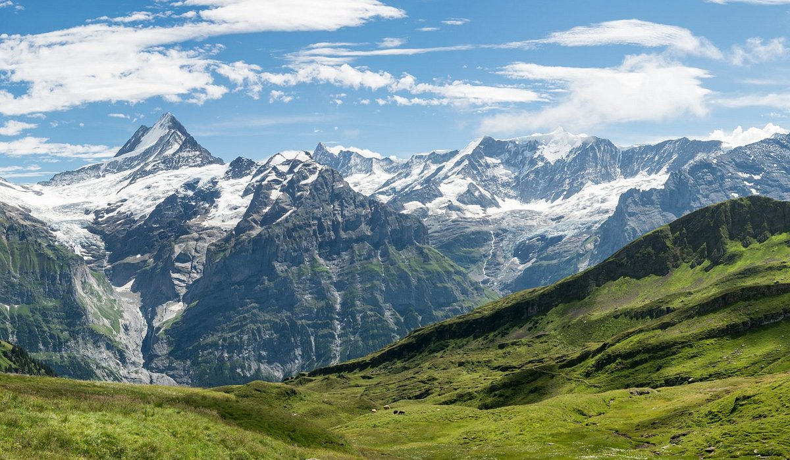

Dirección: George Lucas
Guion: George Lucas
Producción: Rick McCallum
Música: John Williams
Duración: 140 minutos
Estreno: 19 de mayo de 2005 (EE. UU.)
Presupuesto: 113 millones de dólares
Fox Studios Australia: Escenas interiores y sets principales, en Sídney.
Italia: Villa del Balbianello (Lago de Como), lugar del retiro de Anakin y Padmé.
Túnez: Tatooine, casa de los Lars.
Suiza: Montañas de Grindelwald (fondo para el planeta Alderaan).
Tailandia y China: Utilizadas para crear paisajes de Kashyyyk y otros mundos digitales.

italia: Villa del Balbianello (Lago de Como), lugar del retiro de Anakin y Padmé.

Túnez: Tatooine, casa de los Lars.

suisa: Montañas de Grindelwald (fondo para el planeta Alderaan).